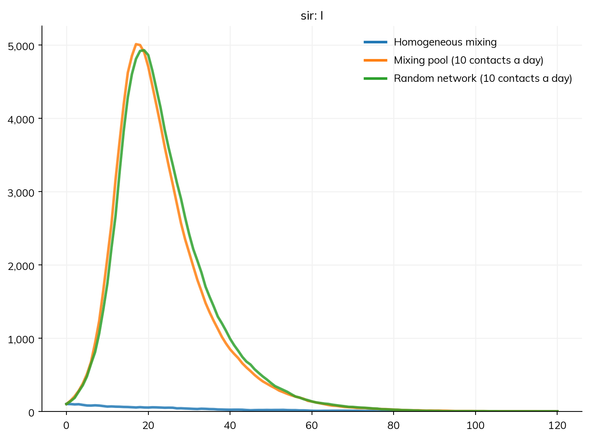
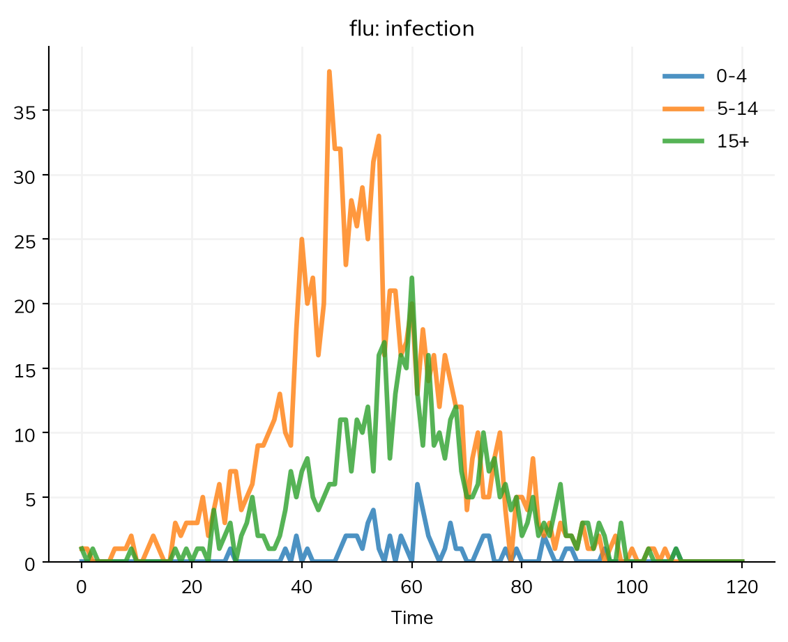
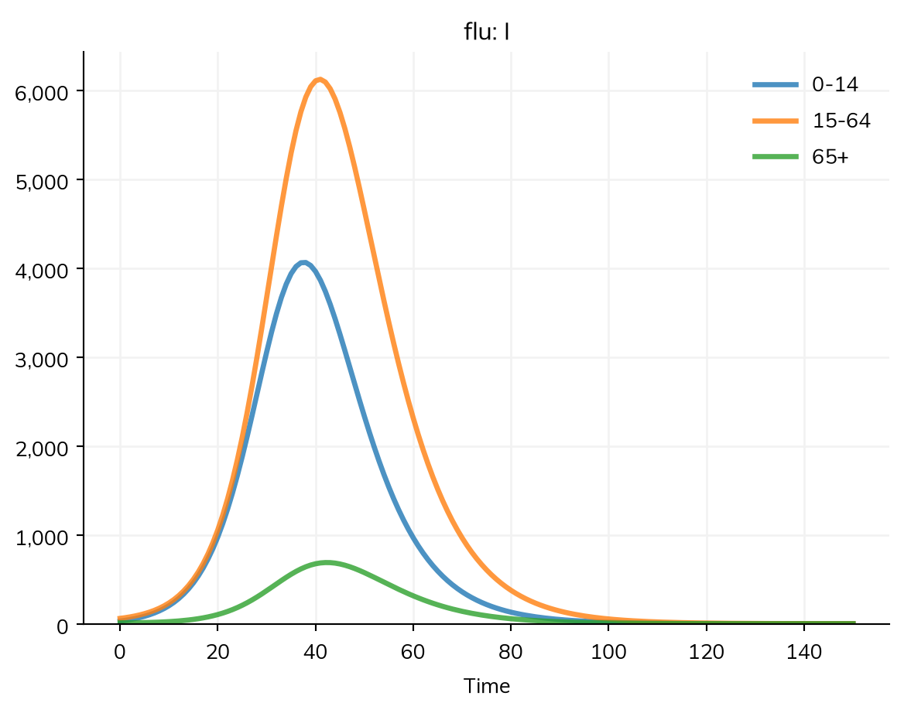
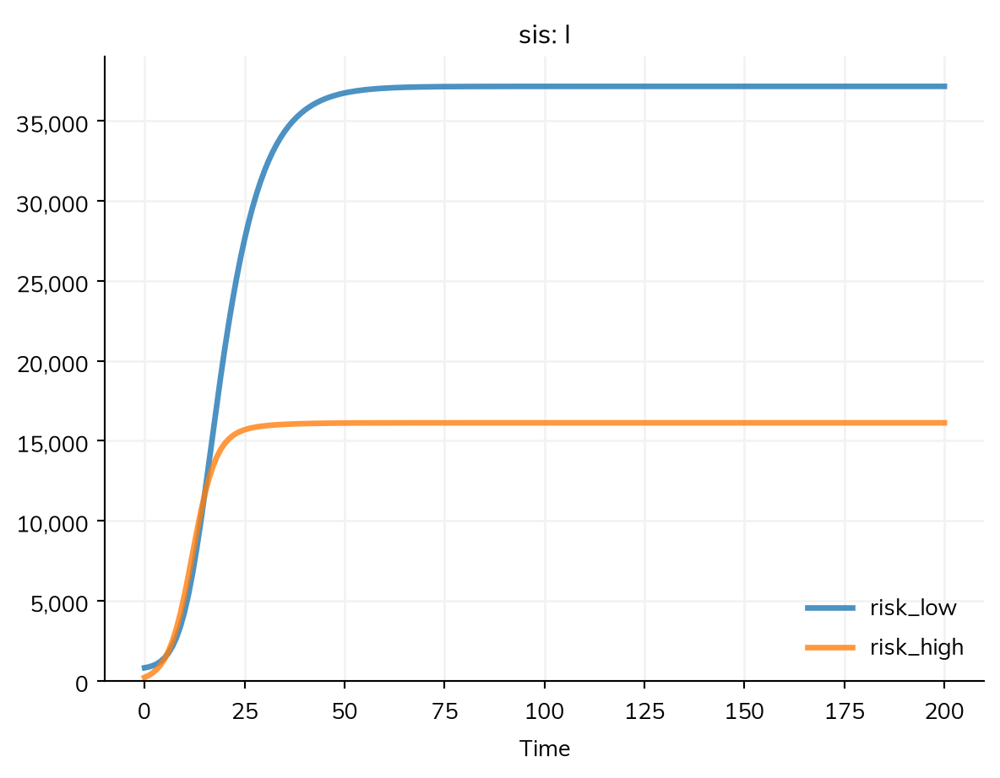
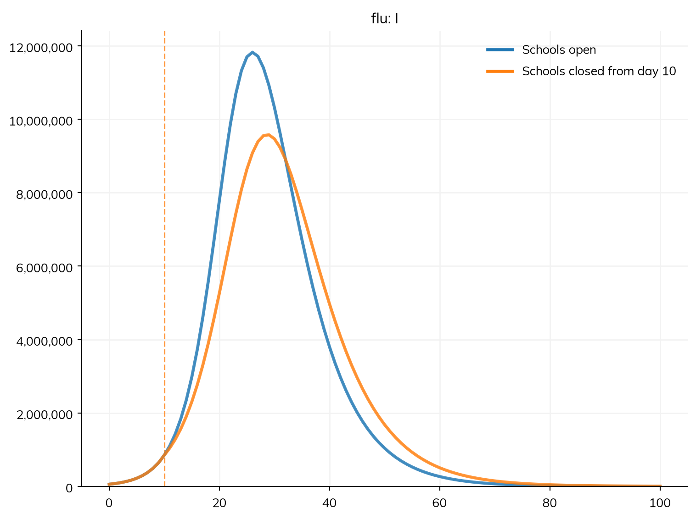
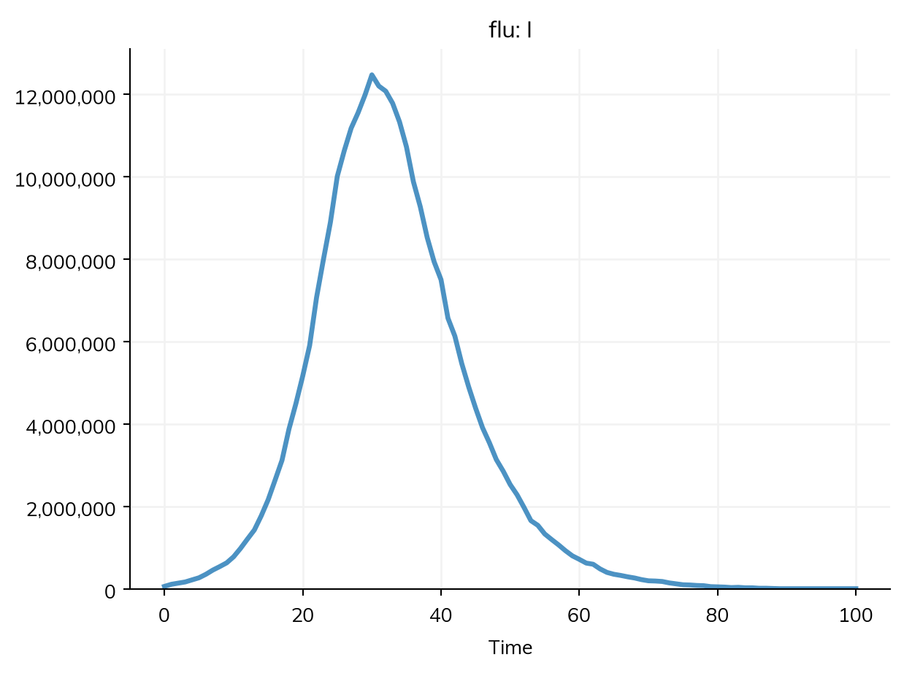
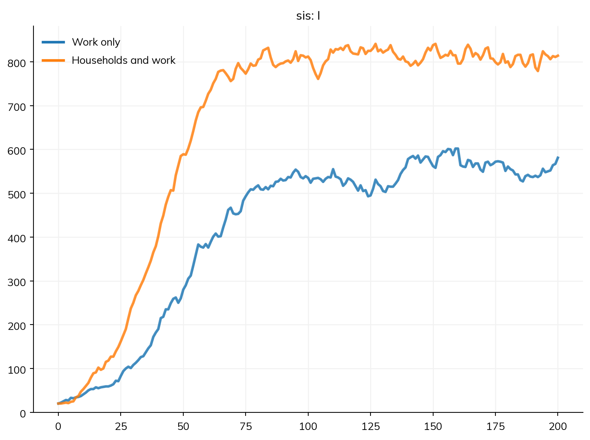

A disease model says how infectious people are; the mixing says who meets whom, and how often. This page goes from the simplest mixing to the most detailed: homogeneous mixing, mixing pools, contact matrices between groups (such as age groups), and networks of individual contacts. Everything but networks runs as written as compartments or as agents; networks are about particular people, so only agents run them as written, and a compartmental solver approximates them (below). Movement between places is in Places and data, and the tutorial T4 – Mixing builds up the same material as a single worked path.
Choosing how people mix
The disease and the mixing are separate: changing from homogeneous mixing to a network does not change the disease. Each way of mixing is a route (a path by which infection can pass), given to the sim with networks=, which takes networks and mixing pools alike, singly or as a list:
No route given: homogeneous mixing, the assumption of the standard ODE models. The transmission rate β (beta) is a rate per unit time: in S >> I @ beta*I, each susceptible person is infected at a rate of β times the fraction of people who are infectious.
A mixing pool, ss.MixingPool(n_contacts=10): homogeneous mixing with 10 contacts per unit time. β is then per contact, so β × the number of contacts is the transmission rate.
A contact matrix, ss.contacts(...): mixing between groups, such as age groups, with a number of contacts for each pair of groups (see below).
A network, such as ss.RandomNet(n_contacts=10) or ss.SexualNet(): contacts between particular people, with β per contact (or per sex act, on a network with acts).
Here is the same disease under three kinds of mixing. With no route, β = 0.05 per day and an infectious period of 10 days give R0 = 0.5; with 10 contacts a day, R0 = 5, and the mixing pool and the random network give nearly the same epidemic:
import starsim as ssimport starsim.library as sslS, I, R = ss.states('S I R')infection = S >> I @0.05*I # β = 0.05: per day with no route, per contact with onerecovery = I >> R @ ss.days(10) # Infectious for 10 days on averagesir = ss.Disease(infection, recovery, init_prev=0.01)kw =dict(n_agents=10_000, stop=ss.days(120), verbose=0)scenarios = {'Homogeneous mixing': ss.Sim(sir, **kw),'Mixing pool (10 contacts a day)': ss.Sim(sir, networks=ss.MixingPool(n_contacts=10), **kw),'Random network (10 contacts a day)': ss.Sim(sir, networks=ss.RandomNet(n_contacts=10), **kw),}msim = ss.parallel(scenarios)msim.plot('sir.I')

library(starsim)states("S I R")sir <-Disease(infection =Transition(S, I, rate =0.05* I), # β = 0.05: per day with no route, per contact with onerecovery =Transition(I, R, dur =days(10)), # Infectious for 10 days on averageinit_prev =0.01)make_sim <-function(...) { # A sim with these settings, and any others givenSim(sir, n_agents =10000, stop =days(120), verbose =0, ...)}msim <-parallel(list("Homogeneous mixing"=make_sim(),"Mixing pool (10 contacts a day)"=make_sim(networks = ss$MixingPool(n_contacts =10)),"Random network (10 contacts a day)"=make_sim(networks = ss$RandomNet(n_contacts =10))))msim$plot("sir.I")
Transmission along every route is frequency-dependent: what matters is the fraction of a person’s contacts who are infectious (a density-dependent rate is written with the count, ss.perday(3e-5)*I.n; see Diseases). β belongs to the disease, not to the route, and a disease transmits over every route unless given a β of 0 for it (see Transmission that differs by route).
Which solver runs it
A model whose mixing has a compartmental form (no route, a mixing pool, or a contact matrix) runs as an ODE unless it is given agents. A model with a network runs as agents. A compartmental solver can still be asked for (solver='ode'); it then approximates the network, and says so in one line:
Route
As agents
As compartments
none given
exact
exact
ss.MixingPool(n_contacts=c)
exact
exact
ss.networks.MixingPools(...), ss.contacts(...)
exact
exact
ss.RandomNet(n_contacts=c)
exact
homogeneous mixing with c contacts per unit time
ssl.StaticNet(graph=...)
exact
homogeneous mixing with the graph’s mean number of contacts
the partner-change model (partnerships formed at a rate, each with the chance it transmits over its whole length), which needs the model stratified by sex for ss.SexualNet
The approximations are rough where the network matters most; see Solvers and backends. Contact tracing, partner notification, and the transmission tree need a network, and so agents.
Numbers of contacts
n_contacts= is a mean on every route, and a distribution gives its shape. For a count of contacts (ss.RandomNet, mixing pools), a number gives everyone that many; for a target number of partners (ss.DegreeNet, ss.SexualNet) or a size (ssl.ClusterNet’s cluster_size), it is the mean of a Poisson. A distribution says otherwise: ss.poisson(10) for contacts that vary between people, ss.constant(1) for exactly one partner each. A compartmental run uses only the mean.
Mixing pools
A mixing pool is homogeneous mixing among a group of people: no individual contacts, but each person has an effective number of contacts in the pool (n_contacts; a distribution is drawn once for each person). With no groups, a pool is everyone. source= and target= restrict it to the people who can infect and the people who can be infected, so a pool can be one group, or one-way between two; each is a condition on people (e.g. ss.person.age < 15), a function of the sim, or UIDs. Each susceptible person in the pool has a hazard of β × the mean infectiousness of the sources × their number of contacts × their rel_sus: the term β × S × I/N of the ODE, applied to each person. Here a flu-like infection spreads through a school, in which children aged 5 to 14 have 10 contacts a day with each other, and the community, in which everyone has 3:
school = ss.MixingPool(name='school',source= (ss.person.age >=5) & (ss.person.age <15), # Children aged 5-14 infect ...target= (ss.person.age >=5) & (ss.person.age <15), # ... each othern_contacts= ss.poisson(mean=10), # 10 contacts a day on average)community = ss.MixingPool(name='community', n_contacts=ss.poisson(mean=3))S, I, R = ss.states('S I R')infection = S >> I @0.03*I # Per contactrecovery = I >> R @ ss.days(5)flu = ss.Disease(infection, recovery, init_prev=0.001)flu.stratify(age=[0, 5, 15]) # Ages 0-4, 5-14, and 15+, for the resultssim = ss.Sim(flu, networks=[school, community], n_agents=10_000, stop=ss.days(120), verbose=0)sim.run()sim.results.flu.infection.by('age').plot()

ss.networks.MixingPools (plural) is a set of pools between groups, with source and target as dicts of groups and n_contacts as a matrix read as a contact survey is: row i is the contacts of a person in target group i, with each source group by column. For mixing by age, the usual case, ss.contacts() makes it from a contact matrix, as below.
Contact matrices
A contact matrix by age
A contact matrix needs groups to act between, so the model is stratified by age first (see Stratification), here with the fraction of the population in each group. ss.contacts() takes the matrix and the lower edge of each of its age groups, and β is per contact:
import starsim as ssS, I, R = ss.states('S I R')infection = S >> I @0.03*I # β = 0.03 per contactrecovery = I >> R @ ss.days(5) # Infectious for 5 days on averageflu = ss.Disease(infection, recovery, init_prev=0.001)flu.stratify(age={0: 0.3, 15: 0.6, 65: 0.1}) # Ages 0-14, 15-64, and 65+, with the fraction of people in eachcontacts = ss.contacts(ages=[0, 15, 65], matrix=[[10, 4, 0.5], [2, 8, 0.5], [1.5, 3, 2]]) # Contacts a daysim = ss.Sim(flu, networks=contacts, total_pop=100_000, stop=ss.days(150))sim.run()sim.results.flu.I.by('age').plot()
Sim: flu, 100,000 people, as an ODE, days 0 to 150
flu: R0 = 1.83, with 100 infectious at the start
Done in 0.0059 s; flu: 67,902 infections; at most 10,741 infectious, on day 40

library(starsim)states("S I R")flu <-Disease(infection =Transition(S, I, rate =0.03* I), # β = 0.03 per contactrecovery =Transition(I, R, dur =days(5)), # Infectious for 5 days on averageinit_prev =0.001)flu$stratify(age =list("0"=0.3, "15"=0.6, "65"=0.1)) # Ages 0-14, 15-64, and 65+, with the fraction of people in eachage_contacts <-contacts(ages =c(0, 15, 65), matrix =rbind(c(10, 4, 0.5), c(2, 8, 0.5), c(1.5, 3, 2))) # Contacts a daysim <-Sim(flu, networks = age_contacts, total_pop =100000, stop =days(150))sim$run()sim$results$flu$I$by("age")$plot()
With a contact matrix, the R0 that the sim prints is β × the infectious period × the largest eigenvalue of the matrix (about 12.2 here, so R0 ≈ 1.8).
Reciprocity. Each contact between two groups is counted from both sides, so Ni × Cij = Nj × Cji. Starsim uses a matrix as given, with each row as the contacts of a person in that group, and says so in a note when it is not reciprocal for the sizes of the model’s groups.
The matrix’s own, given by their lower edges; they need not be the model’s
A matrix over the model’s groups
ss.contacts(matrix) (its age groups), ss.contacts(risk=matrix)
The levels of the model’s stratification by that name, in order
One matrix over several stratifications together
ss.contacts(matrix, dims=['sex', 'risk']), with an axis for each, rows before columns (e.g. shape 2 × 2 × 2 × 2)
Every combination of their levels
Everyone with everyone
ss.contacts(10): 10 contacts per person per unit time (an ss.MixingPool of everyone)
None
A matrix for each of several stratifications
ss.contacts(age=..., risk=...)
Every combination of their levels, with the product of the entries for each
A country’s matrix, by name
ss.contacts('Kenya')
5-year age groups, from a published study
A matrix with its own age groups suits data from a study. In a compartmental run it is aggregated to the model’s age groups, weighted by population; as agents, each person is counted in the matrix’s group for their age. Groups need not be ages: here 20% of people are at high risk, with four times as many contacts with each other as people at low risk have:
S, I = ss.states('S I')infection = S >> I @0.05*Irecovery = I >> S @ ss.days(10) # No lasting immunitysis = ss.Disease(infection, recovery, init_prev=0.01)sis.stratify(risk={'low': 0.8, 'high': 0.2})mixing = ss.contacts(risk=[[2, 1], [4, 8]]) # Reciprocal: 80% × 1 = 20% × 4sim = ss.Sim(sis, networks=mixing, total_pop=100_000, stop=ss.days(200))sim.run()sim.results.sis.I.by('risk').plot()
Sim: sis, 100,000 people, as an ODE, days 0 to 200
sis: R0 = 4.3, with 1,000 infectious at the start
Done in 0.0026 s; sis: 1,028,384 infections; at most 53,280 infectious, on day 200

The entries of a matrix are contacts per unit time, in the sim’s unit unless unit= says otherwise (e.g. unit='day', so that in a sim in years, 10 is not taken as 10 contacts a year). A country’s matrix is always contacts a day.
What a matrix acts on
The rate of the infection says what the matrix multiplies: the fraction of each group who are infectious, their number, or their number as a fraction of everyone. With C the matrix, Ij and Nj the number infectious and the number of people in group j, and N everyone:
The rate
The force of infection on group i
The matrix is
As in
beta*I
β ΣjCijIj / Nj
Contacts per person with each group, and β is per contact
Contact surveys and the matrices of countries; frequency-dependent models
beta*I.n
β ΣjCijIj
A rate for each pair of people (density-dependent)
Lloyd & Jansen (2004), and metapopulation models in densities
beta*I.frac, or beta*I.n/N
β ΣjCijIj / N
A rate on the fraction of everyone who are infectious in each group
Keeling & Rohani (2008), chapter 3; the WAIFW (who acquires infection from whom) matrices of Bjørnstad (2018)
So a matrix from a textbook goes in as given, with the rate written as the textbook writes it. Keeling & Rohani’s Program 3.1, an SIS in a high- and a low-risk group whose β acts on fractions of the whole population, is:
import numpy as npbeta = np.array([[10, 0.1], [0.1, 1]]) # Per year: row i is the group infected, column j the group infectingS, I = ss.states('S I')sis = ss.Disease(S >> I @ I.frac, I >> S @ ss.peryear(1), init=dict(I=ss.by(risk=[1e-5/0.2, 1e-3/0.8])), name='sis')sis.stratify(risk={'high': 0.2, 'low': 0.8})sim = ss.Sim(sis, networks=ss.contacts(risk=beta), total_pop=1, stop=15, unit='year')sim.run()print('Infectious at year 15, as fractions of everyone:', sim.results.sis.I.by('risk').values[-1].round(6)) # The book's 0.100132 and 0.026810
Sim: sis, in proportions (total_pop=1), as an ODE, years 0 to 15
sis: R0 = 2, with 0.00101 infectious at the start
Done in 0.0044 s; sis: 1.06 infections; at most 0.127 infectious, on year 15
Infectious at year 15, as fractions of everyone: [0.100136 0.02681 ]
equations() says what a matrix acts on in each rate. In a model with places, N is everyone in the same place. A weighted count works the same way: beta*I.n_infectious weights each group by its infectiousness (rel_trans).
Contact matrices by setting
A country’s contact matrix can be split by setting: ss.contacts('Kenya', layer=['home', 'school', 'work', 'community']) gives a matrix for each, named after it, which together make up the whole (layer='all', the default). study= picks the study they come from (see Places and data). Each layer can then be changed on its own with ss.modify() (see Interventions); here schools close from day 10:
S, I, R = ss.states('S I R')infection = S >> I @0.03*Irecovery = I >> R @ ss.days(5)flu = ss.Disease(infection, recovery, init_prev=0.001)flu.stratify(age=[0, 5, 15, 65]) # The fractions in each come from the populationlayers = ss.contacts('Kenya', layer=['home', 'school', 'work', 'community'])home, school, work, community = layersclosure = ss.modify(school, multiply=0, start=ss.days(10)) # No school contacts from day 10kw =dict(people=ss.population('Kenya'), networks=layers, stop=ss.days(100), verbose=0)scenarios = {'Schools open': ss.Sim(flu, **kw),'Schools closed from day 10': ss.Sim(flu, interventions=closure, **kw),}msim = ss.parallel(scenarios)msim.plot('flu.I')

Each layer’s matrix is also a table by age group (ss.data.contacts('Kenya', layer='school')), which ss.contacts() also takes, e.g. after changing it.
Contact matrices as agents
Everything above runs as agents too: given n_agents, the matrix works as a set of mixing pools, one for each pair of groups (ss.networks.MixingPools), not as a network of particular contacts. Everyone in an age group then has the mean number of contacts; for contacts that differ between people, give a distribution whose parameters are the matrix, here a lognormal with a standard deviation of half the mean:
C = ss.data.contacts('Kenya') # The mean contacts a day, by 5-year age groupmixing = ss.contacts(ss.lognormal(mean=C, std=C*0.5))S, I, R = ss.states('S I R')flu = ss.Disease(S >> I @0.03*I, I >> R @ ss.days(5), init_prev=0.001)sim = ss.Sim(flu, people=ss.population('Kenya', n_agents=10_000), networks=mixing, stop=ss.days(100), verbose=0).run()sim.results.flu.I.plot()

Each person draws their contacts when they enter an age group, and keeps them while they are in it. Any distribution of values that are not negative will do (e.g. ss.poisson(C)); a compartmental run uses the means.
Networks
Random networks
ss.RandomNet pairs people at random, with n_contacts contacts per person. By default the contacts are redrawn every step; with dynamic=False, they are made once at the start and kept, and with dur=, each lasts that long and is then replaced. who= restricts the network to some people. Several networks can be given together, each with its own name, as a layered population: here households (fully connected clusters of about three people, ssl.ClusterNet) and contacts at work among adults:
households = ssl.ClusterNet(name='households', cluster_size=ss.poisson(3))work = ss.RandomNet(name='work', n_contacts=10, who=(ss.person.age >=20) & (ss.person.age <65), dynamic=False)S, I = ss.states('S I')infection = S >> I @0.02*I # Per contact, per dayrecovery = I >> S @ ss.days(10) # No lasting immunitysis = ss.Disease(infection, recovery, init_prev=0.01)defmake_sim(networks):return ss.Sim(sis, networks=networks, n_agents=2000, stop=ss.days(200), verbose=0)msim = ss.parallel({'Work only': make_sim(work), 'Households and work': make_sim([households, work])})msim.plot('sis.I')print('Number of households:', msim.sims[1].networks.households.n_clusters)

Number of households: 669
The same β applies on every layer unless it is given by route. ssl.HybridNet gives the four layers of Covasim in one: households (h), schools (s), workplaces (w), and the community (c); once in a sim, it becomes four networks, each reached on its own, e.g. sim.networks.s.
Sexual networks
ss.SexualNet is a network of partnerships between two groups of people: by default a man and a woman, or two men (between='mm'), or any two groups by name, such as female sex workers and their clients (between=('fsw', 'client')). A partnership lasts dur (a duration is a mean; a distribution gives any other spread), and has acts sex acts per unit time, for a probability of transmission per act.
By default, people with no partner are paired on every step, so nobody has more than one partner at a time. With n_contacts=, the mean number of partners at a time is a target instead, and so are concurrency= (the fraction with two or more), max_contacts=, and match= (the fraction of partnerships within the same level of a property, e.g. match=dict(risk=0.8)). net.check() runs the sim again and compares the network it makes with each target:
/home/cliffk/idm/ssv4/starsim/networks.py:1737: RuntimeWarning:
the network "sexualnet" has concurrency 0.0806, against a target of 0.1
/home/cliffk/idm/ssv4/starsim/networks.py:1737: RuntimeWarning:
the network "sexualnet" has dur 35.2, against a target of 24
target
realized
spread
mean_degree
1.2
1.095715
0.053972
concurrency
0.1
0.080621
0.008167
max_contacts
NaN
9.333333
2.081666
dur
24.0
35.162809
0.919516
ss.SexualNet is ss.DegreeNet between men and women, with an age of debut and participation. Partnerships that are not sexual, such as needle sharing, are ss.DegreeNet itself, which takes the same targets among anyone (or the people that who= gives, or between two groups with between=).
Mother-to-child networks
Transmission from mother to child needs pregnancy (ss.Pregnancy; see People and demographics), which adds and removes the one-way edges from mother to child: ss.PrenatalNet while the child is in the womb, ss.BreastfeedingNet while the mother breastfeeds, and ss.PostnatalNet for a period after birth (dur=). Here a chronic infection passes through partnerships, to children before birth, and through breastfeeding:
S, I = ss.states('S I')beta =dict(sexualnet= ss.peract(m2f=0.002, f2m=0.001), # Chance of infection per sex actprenatalnet= ss.permonth(0.03), # Rate of infection per month of pregnancybreastfeedingnet= ss.permonth(0.008), # Rate of infection per month of breastfeeding)infection = S >> I @ beta*Ichronic = ss.Disease(infection, init_prev=ss.by(age=[0, 0.1])) # 10% of adults, and no children, at the startchronic.stratify(age=[0, 15]) # Children (0-14) and adults (15+)pregnancy = ss.Pregnancy(fertility_rate=ss.peryear(0.1)) # 100 conceptions per 1,000 women a yeardeaths = ss.Deaths(death_rate=ss.peryear(0.01)) # 10 deaths per 1,000 people a yearsim = ss.Sim(chronic, networks=[ss.SexualNet(), ss.PrenatalNet(), ss.BreastfeedingNet()], demographics=[pregnancy, deaths],analyzers='infection_log', n_agents=5000, start=2000, stop=2020, dt=ss.months(1), verbose=0)sim.run()sim.results.chronic.I.select(age='0-14').plot()print(sim.analyzers.infection_log.log.to_df().network.value_counts())
A network keeps its edges as arrays: p1 (the first person in each edge), p2 (the second), and weight (a multiplier on the chance each edge transmits, 1 by default), reached as net.edges or as net['p1']. net.find_contacts(uids) gives the contacts of some people, net.to_df() the edges as a table, and a network can be made from a table of edges with from_df():
sim = ss.Sim(n_agents=1000, networks=ss.RandomNet(n_contacts=4), stop=ss.days(10), verbose=0)sim.run()net = sim.networks.randomnetprint('Edges:', len(net))print('Contacts of person 0:', net.find_contacts([0]))custom = ss.Network(name='custom').from_df(dict(p1=[0, 1, 2], p2=[1, 2, 3]))custom.to_df()
Edges: 2000
Contacts of person 0: [ 98 138 474 518 540 714]
p1
p2
weight
0
0
1
1.0
1
1
2
1.0
2
2
3
1.0
net.remove_edges() removes edges by a condition on them (e.g. net['p1'] < 100), net.to_graph() gives the network as a NetworkX graph, and net.plot() draws it. For a network of partnerships, net.degrees(uids) gives the number of partners each person has now, and memory= (e.g. ss.SexualNet(memory=ss.years(1))) keeps partnerships that ended within that time, so that contact tracing (the trace= of a delivery: see Interventions) also reaches recent past partners.
Writing a network
A network written as code is a subclass of one of the networks in the appendix (usually ss.DynamicNetwork, for partnerships that form and end, or ss.SexualNet) that overrides how edges are made. The methods it can override:
Method
What it does
add_pairs()
Makes new edges; the main method to override
remove_pairs()
Ends edges, e.g. those whose duration is over
step()
Called every step; by default removes, then adds, pairs
How infectious someone is can depend on the route: HIV, for example, passes far more readily through a shared needle than through sex. The disease then gives one β for each route, as a dict keyed by the route’s name (the network’s class in lowercase, unless it was given a name=), with a value for every route. On a network with directions, β takes a value for each: ss.peract(m2f=..., f2m=...) is a probability per act from men to women and from women to men. On a network without acts, β is a rate for each contact with an infectious person, e.g. ss.peryear(0.2). The infection log (ss.infection_log; see Analyzers) records the route of each infection:
S, I = ss.states('S I')beta =dict(randomnet=ss.peryear(0.2), sexualnet=ss.peract(m2f=0.01, f2m=0.005))infection = S >> I @ beta*Irecovery = I >> S @ ss.years(1)sis = ss.Disease(infection, recovery, init_prev=0.05)sim = ss.Sim(sis, networks=[ss.RandomNet(), ss.SexualNet()], analyzers='infection_log', n_agents=2000, start=2000, stop=2020, dt=ss.months(1), verbose=0)sim.run()log = sim.analyzers.infection_log.log.to_df()print('Infections by route:')print(log.network.value_counts()) # The seeds at the start have no route
β changes meaning when a route is added. With no route, β is a rate per unit time; with a mixing pool, contact matrix, or network, it is a rate per contact, so a contact with an infectious person infects with probability 1 − e^−β·dt over a step (give ss.probperweek() and the like for a chance per contact over a time; ss.peract() for one per act). Adding networks=ss.RandomNet(n_contacts=10) to a model fitted with homogeneous mixing multiplies its R0 by 10. Check the R0 that the sim prints.
A probability per act needs acts.ss.peract() on a route without acts (a random network, a mixing pool, a mother-to-child network) raises an error; give a rate per contact instead.
A contact matrix needs groups. A matrix with its own age groups, on a model with no age groups, stratifies it by the matrix’s groups, with the fraction in each from the world’s population, a guess that describe() marks; give the fractions (or a named population) if they matter.
The base classes, for a network of your own (see above) or one made from a table of edges (from_df())
The library (import starsim.library as ssl) has more:
Network
What it is
Main parameters
ssl.ClusterNet
Fully connected clusters, such as households
cluster_size, dynamic, who
ssl.HouseholdNet
Households from survey data (such as the DHS), which also sets each person’s age and sex to match; with ss.Pregnancy, newborns join their mother’s household
dhs_data, dynamic
ssl.HybridNet
Households, schools, workplaces, and community, as in Covasim
A fixed network from a NetworkX graph (such as one of its generators), by default an Erdős–Rényi graph (each pair of people connected with a probability)